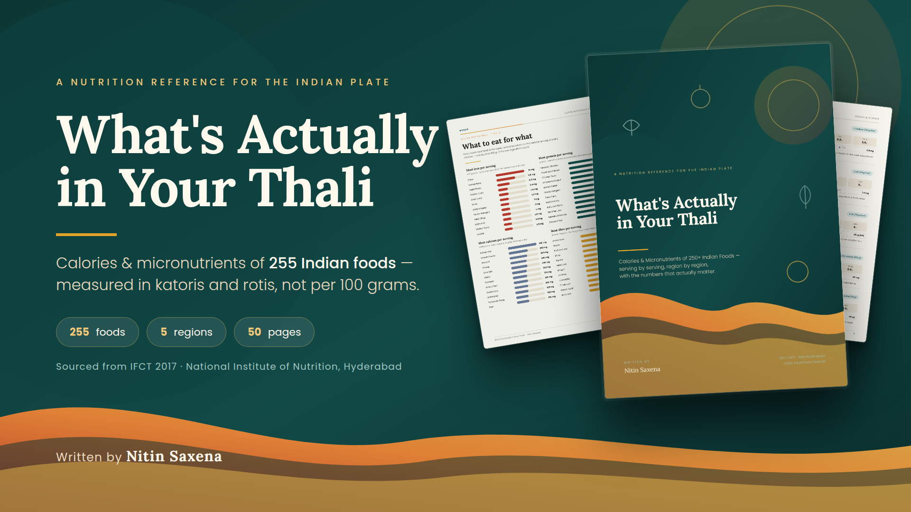

{{ r.num }}
{{ r.name }}
{{ r.desc }}
{{ r.meta }}
A nutrition reference for the Indian plate
Two rotis, a katori of dal, a spoon of ghee, a glass of chai. That is the meal — and almost no nutrition table counts it. This one does: 255 Indian foods across 5 regions, every entry in a household serving, with calories, macros, key micronutrients, insight notes and quick-reference charts.
Instant digital download after payment · 50-page PDF · read on phone, tablet or laptop

50 pages · 155 illustrated data cards · fully cross-referenced
The problem
Almost every nutrition table an Indian reader can find was built around food Indians do not eat — cups of cereal, ounces of cheese, grams of raw broccoli. Meanwhile the actual meal goes uncounted.
You don't eat 100 grams of anything. You eat two phulkas, a katori of dal, a sabzi cooked in a spoon and a half of oil, four cubes of paneer, a cup of chai. When the chart speaks one language and your plate speaks another, the honest answer to “how much protein was that?” is a shrug.
What the chart says
“Wheat flour, 100 g: 341 kcal.” Useful to a laboratory. Useless at the dining table, where nobody weighs the atta.
What this book says
“Phulka, 1 medium: 104 kcal, 3.4 g protein, 2.6 g fibre, 1.5 mg iron — and a squeeze of lemon multiplies how much of that iron you absorb.”
Your actual Indian meal deserves nutrition information in the terms you actually use.
The big idea
Every one of the 255 foods is presented the same way, so you can compare a Punjabi breakfast with a Tamil one without re-learning the layout. Look something up once; look it up again next month and the page reads identically.
What you get
{{ f.n }}
{{ f.d }}
Peek inside
Three spreads from the book, exactly as they read: illustrated data cards, a regional short-form table and the myths chapter.
North IndiaDals & Legumes
{{ c.name }}
{{ c.sub }} · {{ c.serving }}
PROTEIN
{{ c.p }}
CARBS
{{ c.c }}
FAT
{{ c.f }}
FIBRE
{{ c.fib }}
{{ c.note }}
Quick reference · the region at a glance
North India — twenty more
| FOOD | SERVING | KCAL | PROT | FIBRE |
|---|---|---|---|---|
| {{ g.food }} | {{ g.serving }} | {{ g.kcal }} | {{ g.prot }} | {{ g.fib }} |
South India — a sample
| {{ g.food }} | {{ g.serving }} | {{ g.kcal }} | {{ g.prot }} | {{ g.fib }} |
Grams of protein and dietary fibre per household serving. Values are rounded and assume home-style preparation; restaurant versions typically carry 20–40% more fat.
Bonus · nutrition myths, busted
Twelve claims, checked
{{ m.claim }}
{{ m.verdict }}
{{ m.text }}
One card, in full
North IndiaDals & Legumes · page 8
brown chickpea · Bengal gram whole
1 katori boiled (150 g)
PROTEIN
13 g
CARBS
41 g
FAT
2.6 g
FIBRE
11 g
Iron
4.3 mg
Folate
260 μg
Zinc
2.3 mg
A single katori covers about a fifth of an adult woman's daily iron need and nearly half the day's fibre target. Sprouting it raises both further.
155 foods are presented in this format. Another 100 appear in the regional short-form tables.
Five regions
Each region runs in the same category order — grains, dals, vegetables, dairy, non-veg, fermented foods, snacks, sweets, drinks — so the same food type always sits in the same place, whichever part of the country you turn to.
{{ r.num }}
{{ r.desc }}
{{ r.meta }}
The numbers that matter
Each card names only the three micronutrients that matter most in that food — the full IFCT profile runs to 150. Below, one real high point from the book for each nutrient, per household serving.
{{ n.name }}
{{ n.val }}
{{ n.food }}
Reference figures only. No number here diagnoses a deficiency or prescribes an intake — requirements differ by age, sex, pregnancy, activity and health.
Nutrition myths, busted
A bonus chapter takes twelve claims repeated daily in Indian kitchens and answers each against the same data used throughout the book. Six of them, in brief:
{{ m.verdict }}
{{ m.claim }}
{{ m.text }}
₹199 one-time · all twelve claims are in the book, with the numbers behind each.
Who it's for
{{ y }}
Being straight with you
{{ n }}
It is a reference, not a prescription. Nutrient requirements differ by age, sex, pregnancy, activity level and disease, and anyone managing a medical condition should read these tables with a clinician or registered dietitian.
Where the numbers come from
The primary source is the Indian Food Composition Tables 2017 from the National Institute of Nutrition, Hyderabad — the measurement of 528 key Indian foods sampled across six regions, and the only composition data built on Indian varieties, Indian soils and Indian cooking.
Where IFCT has no entry — mostly composite restaurant dishes and modern street foods — values are built up from their ingredients, with USDA FoodData Central covering the few ingredients IFCT does not.
Calories are given to the nearest 5 kcal. Cooking fat is stated on the card and counted in. Every figure is a well-anchored estimate for typical home-style cooking — the size of your katori, the oil the pan absorbed and how long the saag simmered will move it by 10–20%.
Written by
Nitin Saxena
Cited works
{{ s }}
Included
{{ s }}
One PDF, 50 pages, fully cross-referenced. Yours to keep and refer back to — ₹199, one-time.
Questions
{{ f.a }}

The last word
You already know what you ate today. What you don't know is what it delivered — how much protein was in that katori of dal, whether the chai after lunch cost you the iron in it, which roti on your table carries twice the fibre of the others.
This book answers those questions in the only units that are any use at a dining table: one medium roti, one katori, one glass, one piece. 255 foods, five regions, 155 illustrated cards, myths checked against the data, and charts that rank everything by iron, protein, calcium and fibre.
It is a reference, not a diet plan — the kind of book you open for thirty seconds, get your answer, and open again next week.
₹199 one-time payment
Instant digital download after payment · 50-page PDF · read on any device
₹199
one-time